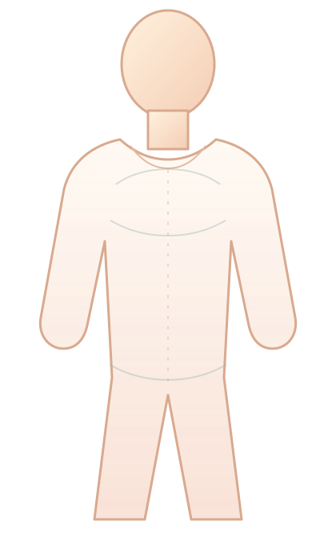

本机记录
第 1 组
V1 · 初始模型
食物会怎样在身体里旅行？
把器官自由摆到人体上，再直接画出食物经过的路线。这里不会提示对错。
初次建模AR观察证据修正

从口腔开始，用一笔画出食物的旅行路线
教师端 · 实时数据
12 个小组的模型变化
每张图保留学生真实摆放位置与所画路线；系统只呈现变化，不替学生判分。
V1 · 初始模型
把器官自由摆到人体上，再直接画出食物经过的路线。这里不会提示对错。

教师端 · 实时数据
每张图保留学生真实摆放位置与所画路线；系统只呈现变化，不替学生判分。